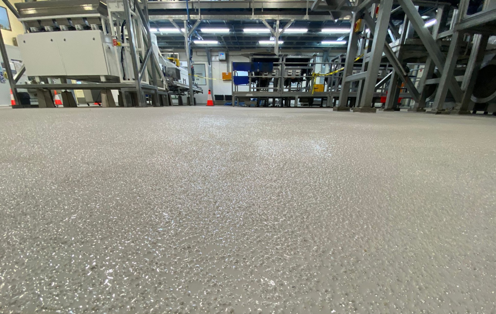

01 · Traffic
Vehicles and loads
Forklift routes, turning points, dropped tools and static loads.
Industrial epoxy flooring
Hard-wearing resin systems for workshops, warehouses and production facilities.
System selection starts with traffic, contamination, condition and cure window.

Why coat the floor
A sound coating protects the slab, simplifies cleaning and gives people clear visual control of the workplace.
System design
The right build depends on what the floor sees every day.
01 · Traffic
Forklift routes, turning points, dropped tools and static loads.
02 · Exposure
Oils, chemicals, hot wash-down and hygiene requirements.
03 · Substrate
Cracks, joints, moisture and previous coatings are assessed first.
04 · Programme
Standard or fast-cure systems matched to your shutdown.
05 · Safety
Texture and colour contrast suited to each work area.
06 · Lifecycle
Compare total service life, not only the installation price.
System comparison
Choose for the exposure and service life, not the tin price.
| System | Use | Strength | Trade-off |
|---|---|---|---|
| Single-pack | Light-duty areas | Fast, simple application | Shorter service life |
| Two-pack | Industrial traffic | Higher wear resistance | More preparation and cure time |
Typical facilities
Workshops, heavy vehicle facilities, manufacturing floors and assembly zones.
Lifetime cost
Preparation, shutdown, cleaning and recoating all affect the real cost.
01
Preparation, repairs and coating build.
02
Cleaning time and production access.
03
Expected service life and recoat window.
Downtime
We stage preparation, coating and return to service around site access.
Flooring process
See the complete flooring sequence on a recent Cotewell project.
Learning centre
Short guides on preparation, coating choice and shutdown planning.
Guide
Guide
Case study
Industrial flooring FAQ
What to confirm before approving a coating scope.
It depends on preparation, traffic and the system specified for each zone.
Yes. We plan sections around access, cure time and production requirements.
Yes. The substrate is assessed and repaired before coating begins.
Site selector
Send the area, traffic, contaminants and shutdown window.